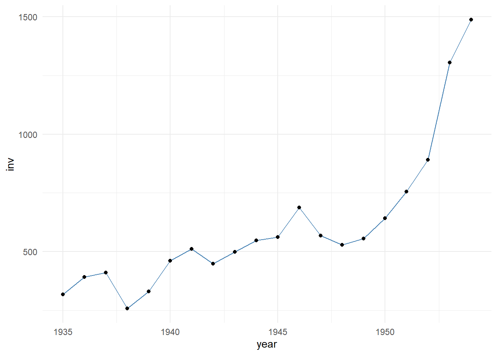
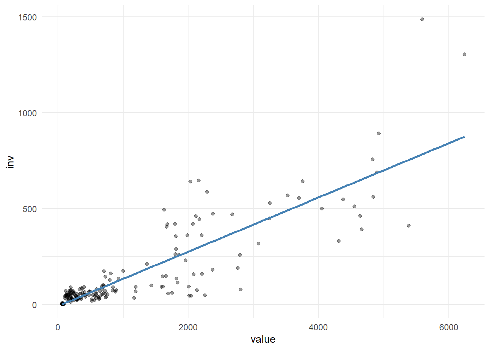
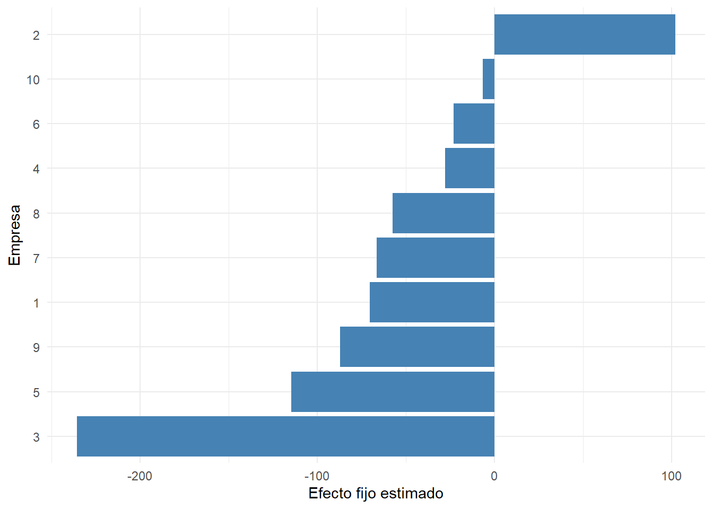
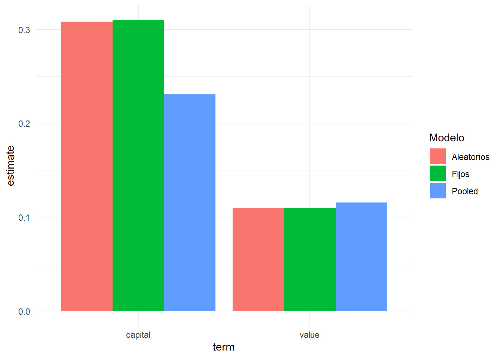
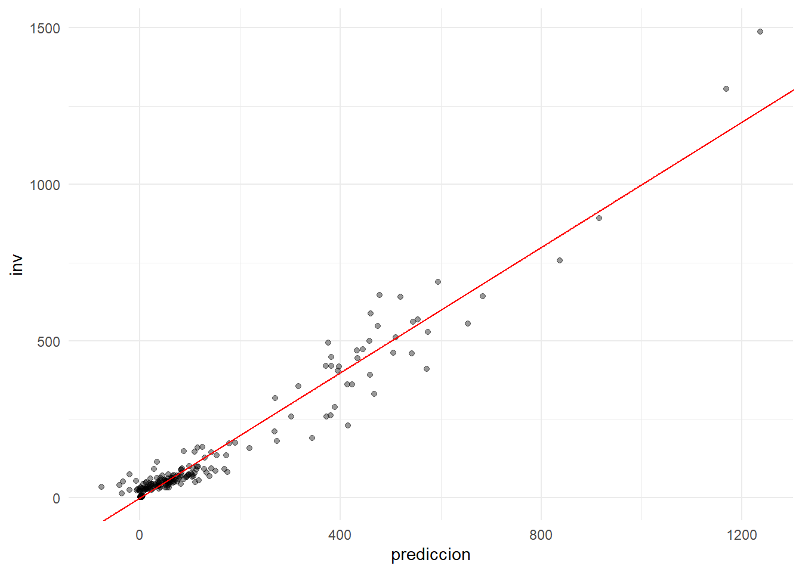
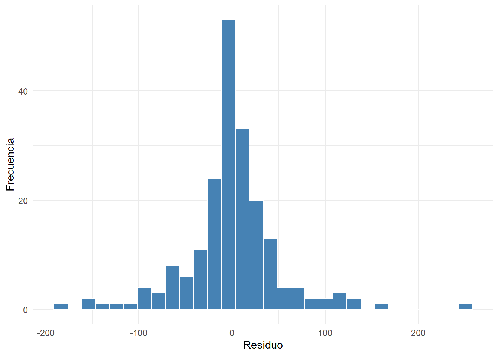

library(tidyverse)
library(plm)
library(broom)
library(knitr)28 Datos de panel
Objetivos de aprendizaje
Al finalizar esta sección, el lector será capaz de:
- Comprender qué son los datos de panel.
- Diferenciar datos transversales, series de tiempo y panel.
- Identificar paneles balanceados y desbalanceados.
- Preparar datos panel en R.
- Reconocer la estructura individuo-tiempo.
- Explorar bases para modelos de panel.
28.1 Introducción
En capítulos anteriores trabajamos con observaciones independientes registradas en un único momento del tiempo, es decir, con datos transversales.
Sin embargo, muchas investigaciones requieren observar las mismas unidades durante varios períodos.
Por ejemplo:
Empresas observadas durante varios años.
Provincias observadas durante varias décadas.
Hogares observados en múltiples encuestas.Este tipo de información recibe el nombre de datos de panel (Wooldridge, 2010).
28.2 ¿Qué son los datos de panel?
Los datos de panel combinan simultáneamente:
Dimensión transversal
+
Dimensión temporalPor ejemplo:
| Empresa | Año | Inversión |
|---|---|---|
| A | 2020 | 100 |
| A | 2021 | 120 |
| A | 2022 | 135 |
| B | 2020 | 80 |
| B | 2021 | 95 |
| B | 2022 | 110 |
La misma unidad aparece repetidamente a través del tiempo.
28.3 Ventajas de los datos de panel
Los datos de panel permiten:
- Analizar cambios temporales.
- Controlar heterogeneidad individual.
- Incrementar el número de observaciones.
- Mejorar la precisión de las estimaciones.
- Evaluar dinámicas de comportamiento.
28.4 Cargando librerías
28.5 Cargando la base de datos
Utilizaremos la base Grunfeld incluida en el paquete plm.
data(
"Grunfeld",
package = "plm"
)
panel_datos <- Grunfeld28.6 Explorando la estructura
glimpse(
panel_datos
)Rows: 200
Columns: 5
$ firm <int> 1, 1, 1, 1, 1, 1, 1, 1, 1, 1, 1, 1, 1, 1, 1, 1, 1, 1, 1, 1, 2,…
$ year <int> 1935, 1936, 1937, 1938, 1939, 1940, 1941, 1942, 1943, 1944, 19…
$ inv <dbl> 317.6, 391.8, 410.6, 257.7, 330.8, 461.2, 512.0, 448.0, 499.6,…
$ value <dbl> 3078.5, 4661.7, 5387.1, 2792.2, 4313.2, 4643.9, 4551.2, 3244.1…
$ capital <dbl> 2.8, 52.6, 156.9, 209.2, 203.4, 207.2, 255.2, 303.7, 264.1, 20…Interpretación
La base contiene:
- Empresa (
firm) - Año (
year) - Inversión (
inv) - Valor de mercado (
value) - Capital (
capital)
28.7 Primeras observaciones
panel_datos |>
slice_head(
n = 10
) |>
kable(
caption = "Primeras observaciones de la base Grunfeld"
)| firm | year | inv | value | capital |
|---|---|---|---|---|
| 1 | 1935 | 317.6 | 3078.5 | 2.8 |
| 1 | 1936 | 391.8 | 4661.7 | 52.6 |
| 1 | 1937 | 410.6 | 5387.1 | 156.9 |
| 1 | 1938 | 257.7 | 2792.2 | 209.2 |
| 1 | 1939 | 330.8 | 4313.2 | 203.4 |
| 1 | 1940 | 461.2 | 4643.9 | 207.2 |
| 1 | 1941 | 512.0 | 4551.2 | 255.2 |
| 1 | 1942 | 448.0 | 3244.1 | 303.7 |
| 1 | 1943 | 499.6 | 4053.7 | 264.1 |
| 1 | 1944 | 547.5 | 4379.3 | 201.6 |
Interpretación
Cada empresa aparece repetidamente en distintos años.
Esta característica define la estructura panel.
28.8 Identificando individuos
panel_datos |>
summarise(
Empresas =
n_distinct(
firm
)
) |>
kable(
caption = "Número de empresas"
)| Empresas |
|---|
| 10 |
28.9 Identificando períodos
panel_datos |>
summarise(
Periodos =
n_distinct(
year
)
) |>
kable(
caption = "Número de períodos"
)| Periodos |
|---|
| 20 |
Interpretación
La combinación empresa-año constituye la unidad básica de observación.
28.10 Visualización temporal
panel_datos |>
filter(
firm == 1
) |>
ggplot(
aes(
x = year,
y = inv
)
) +
geom_line(
color = "steelblue"
) +
geom_point() +
theme_minimal()
Interpretación
La inversión cambia a lo largo del tiempo para una misma empresa.
28.11 Panel balanceado
Un panel es balanceado cuando todas las unidades poseen observaciones para todos los períodos.
pdata.frame(
panel_datos,
index = c(
"firm",
"year"
)
) |>
is.pbalanced() |>
tibble(
Panel_Balanceado = _
) |>
kable(
caption = "Verificación de balance del panel"
)| Panel_Balanceado |
|---|
| TRUE |
Interpretación
Un valor TRUE indica que todas las empresas poseen información completa.
28.12 Conversión a objeto panel
panel_grunfeld <- pdata.frame(
panel_datos,
index = c(
"firm",
"year"
)
)28.13 Verificación del índice
index(
panel_grunfeld
) |>
as.data.frame() |>
slice_head(
n = 10
) |>
kable(
caption = "Índices del panel"
)| firm | year |
|---|---|
| 1 | 1935 |
| 1 | 1936 |
| 1 | 1937 |
| 1 | 1938 |
| 1 | 1939 |
| 1 | 1940 |
| 1 | 1941 |
| 1 | 1942 |
| 1 | 1943 |
| 1 | 1944 |
Interpretación
R reconoce explícitamente:
- Individuo: empresa.
- Tiempo: año.
Esta estructura será utilizada en los modelos econométricos posteriores.
28.14 Conclusión práctica
En esta primera parte aprendimos a:
- Identificar datos de panel.
- Diferenciar dimensiones transversal y temporal.
- Reconocer paneles balanceados.
- Cargar bases panel.
- Construir objetos
pdata.frame. - Preparar datos para modelos de panel.
En la siguiente sección estimaremos modelos pooled OLS, efectos fijos y efectos aleatorios.
28.15 Introducción
Una vez definida la estructura panel, el siguiente paso consiste en estimar modelos econométricos.
Los tres enfoques más utilizados son:
Pooled OLS
Efectos Fijos
Efectos AleatoriosCada uno realiza supuestos distintos sobre la heterogeneidad existente entre individuos (Wooldridge, 2010).
28.16 Cargando librerías
library(tidyverse)
library(plm)
library(broom)
library(knitr)28.17 Cargando la base Grunfeld
data(
"Grunfeld",
package = "plm"
)
panel_grunfeld <- pdata.frame(
Grunfeld,
index = c(
"firm",
"year"
)
)28.18 Variables del modelo
Trabajaremos con la siguiente especificación:
Inversión = f(Valor de mercado, Capital)donde:
inv = inversión
value = valor de mercado
capital = stock de capital28.19 Exploración inicial
panel_grunfeld |>
select(
inv,
value,
capital
) |>
summary() |>
as.data.frame() |>
kable(
caption = "Resumen descriptivo de variables"
)| Var1 | Var2 | Freq |
|---|---|---|
| inv | Min. : 0.93 | |
| inv | 1st Qu.: 33.56 | |
| inv | Median : 57.48 | |
| inv | Mean : 145.96 | |
| inv | 3rd Qu.: 138.04 | |
| inv | Max. :1486.70 | |
| value | Min. : 58.12 | |
| value | 1st Qu.: 199.97 | |
| value | Median : 517.95 | |
| value | Mean :1081.68 | |
| value | 3rd Qu.:1679.85 | |
| value | Max. :6241.70 | |
| capital | Min. : 0.80 | |
| capital | 1st Qu.: 79.17 | |
| capital | Median : 205.60 | |
| capital | Mean : 276.02 | |
| capital | 3rd Qu.: 358.10 | |
| capital | Max. :2226.30 |
Interpretación
Las tres variables presentan una dispersión considerable, lo que resulta adecuado para la estimación econométrica.
28.20 Relación inversión y valor de mercado
ggplot(
as.data.frame(panel_grunfeld),
aes(
x = value,
y = inv
)
) +
geom_point(
alpha = 0.4
) +
geom_smooth(
method = "lm",
se = FALSE,
color = "steelblue"
) +
theme_minimal()
Interpretación
Existe una relación positiva entre valor de mercado e inversión, es decir, a medida que aumenta el valor de mercado, la inversión también se incrementa.
28.21 Modelo pooled OLS
El modelo pooled ignora la estructura panel y trata todas las observaciones como si fueran independientes.
modelo_pooled <- plm(
inv ~ value + capital,
data = panel_grunfeld,
model = "pooling"
)28.22 Resultados pooled OLS
tidy(
modelo_pooled
) |>
kable(
digits = 4,
caption = "Modelo pooled OLS"
)| term | estimate | std.error | statistic | p.value |
|---|---|---|---|---|
| (Intercept) | -42.7144 | 9.5117 | -4.4907 | 0 |
| value | 0.1156 | 0.0058 | 19.8026 | 0 |
| capital | 0.2307 | 0.0255 | 9.0548 | 0 |
Interpretación
Los coeficientes representan el efecto promedio de cada variable explicativa sobre la inversión. No debe olvidarse comprobar la significancia estadística mediante el valor p o el estadístico t.
28.23 Coeficiente de determinación
tibble(
R2 =
summary(
modelo_pooled
)$r.squared[1]
) |>
kable(
digits = 4,
caption = "R² del modelo pooled"
)| R2 |
|---|
| 0.8124 |
Interpretación
El R² indica la proporción de variabilidad de la inversión explicada por el modelo.
28.24 ¿Cuál es el problema del pooled OLS?
Las empresas poseen características propias:
Tecnología
Capacidad gerencial
Cultura organizacional
UbicaciónMuchas de estas variables no son observables.
El modelo pooled ignora estas diferencias.
28.25 Modelo de efectos fijos
Los efectos fijos controlan características constantes de cada empresa.
modelo_fe <- plm(
inv ~ value + capital,
data = panel_grunfeld,
model = "within"
)28.26 Resultados efectos fijos
tidy(
modelo_fe
) |>
kable(
digits = 4,
caption = "Modelo de efectos fijos"
)| term | estimate | std.error | statistic | p.value |
|---|---|---|---|---|
| value | 0.1101 | 0.0119 | 9.2879 | 0 |
| capital | 0.3101 | 0.0174 | 17.8666 | 0 |
Interpretación
Los coeficientes reflejan cambios dentro de cada empresa a través del tiempo.
28.27 Efectos individuales
fixef(
modelo_fe
) |>
head() |>
as.data.frame() |>
tibble::rownames_to_column(
"Empresa"
) |>
kable(
digits = 4,
caption = "Primeros efectos individuales"
)| Empresa | head(fixef(modelo_fe)) |
|---|---|
| 1 | -70.2967 |
| 2 | 101.9058 |
| 3 | -235.5718 |
| 4 | -27.8093 |
| 5 | -114.6168 |
| 6 | -23.1613 |
Interpretación
Cada empresa posee un intercepto propio.
28.28 Visualización de efectos individuales
efectos_fijos <- fixef(
modelo_fe
) |>
as.numeric()
efectos_fijos_tabla <- tibble(
Empresa = names(
fixef(
modelo_fe
)
),
Efecto = efectos_fijos
)
ggplot(
efectos_fijos_tabla,
aes(
x = reorder(
Empresa,
Efecto
),
y = Efecto
)
) +
geom_col(
fill = "steelblue"
) +
coord_flip() +
theme_minimal() +
labs(
x = "Empresa",
y = "Efecto fijo estimado"
)
Interpretación
Las diferencias observadas representan heterogeneidad específica entre empresas.
28.29 Modelo de efectos aleatorios
Los efectos aleatorios consideran que las diferencias individuales son aleatorias.
modelo_re <- plm(
inv ~ value + capital,
data = panel_grunfeld,
model = "random"
)28.30 Resultados efectos aleatorios
tidy(
modelo_re
) |>
kable(
digits = 4,
caption = "Modelo de efectos aleatorios"
)| term | estimate | std.error | statistic | p.value |
|---|---|---|---|---|
| (Intercept) | -57.8344 | 28.8989 | -2.0013 | 0.0454 |
| value | 0.1098 | 0.0105 | 10.4627 | 0.0000 |
| capital | 0.3081 | 0.0172 | 17.9339 | 0.0000 |
Interpretación
Los coeficientes suelen ser similares a los de efectos fijos, aunque los supuestos subyacentes son diferentes.
28.31 Comparación de coeficientes
coef_pooled <- tidy(
modelo_pooled
) |>
select(
term,
estimate
) |>
rename(
Pooled = estimate
)
coef_fe <- tidy(
modelo_fe
) |>
select(
term,
estimate
) |>
rename(
Efectos_Fijos = estimate
)
coef_re <- tidy(
modelo_re
) |>
select(
term,
estimate
) |>
rename(
Efectos_Aleatorios = estimate
)
coef_pooled |>
left_join(
coef_fe,
by = "term"
) |>
left_join(
coef_re,
by = "term"
) |>
kable(
digits = 4,
caption = "Comparación de coeficientes"
)| term | Pooled | Efectos_Fijos | Efectos_Aleatorios |
|---|---|---|---|
| (Intercept) | -42.7144 | NA | -57.8344 |
| value | 0.1156 | 0.1101 | 0.1098 |
| capital | 0.2307 | 0.3101 | 0.3081 |
Interpretación
Las diferencias entre coeficientes reflejan la forma en que cada modelo trata la heterogeneidad individual.
28.32 Comparación gráfica
bind_rows(
tidy(modelo_pooled) |>
mutate(Modelo = "Pooled"),
tidy(modelo_fe) |>
mutate(Modelo = "Fijos"),
tidy(modelo_re) |>
mutate(Modelo = "Aleatorios")
) |>
filter(
term != "(Intercept)"
) |>
ggplot(
aes(
x = term,
y = estimate,
fill = Modelo
)
) +
geom_col(
position = "dodge"
) +
theme_minimal()
Interpretación
La comparación visual facilita identificar diferencias entre estimadores.
28.33 ¿Cuándo utilizar cada modelo?
tibble(
Modelo = c(
"Pooled",
"Efectos Fijos",
"Efectos Aleatorios"
),
Uso = c(
"Sin heterogeneidad",
"Heterogeneidad correlacionada",
"Heterogeneidad no correlacionada"
)
) |>
kable(
caption = "Uso general de los modelos de panel"
)| Modelo | Uso |
|---|---|
| Pooled | Sin heterogeneidad |
| Efectos Fijos | Heterogeneidad correlacionada |
| Efectos Aleatorios | Heterogeneidad no correlacionada |
28.34 Conclusión práctica
En esta sección aprendimos a:
- Estimar modelos pooled OLS.
- Estimar modelos de efectos fijos.
- Estimar modelos de efectos aleatorios.
- Interpretar coeficientes en panel.
- Identificar heterogeneidad individual.
- Comparar diferentes especificaciones.
En la siguiente sección utilizaremos pruebas formales para seleccionar entre efectos fijos y efectos aleatorios mediante la prueba de Hausman.
28.35 Introducción
Después de estimar modelos pooled OLS, efectos fijos y efectos aleatorios surge una pregunta fundamental:
¿Cuál de los modelos debe utilizarse?La respuesta depende de los supuestos sobre la heterogeneidad individual.
En esta sección utilizaremos pruebas formales para seleccionar el modelo más apropiado y realizaremos una aplicación completa de análisis con datos de panel (Wooldridge, 2010).
28.36 Cargando librerías
library(tidyverse)
library(plm)
library(broom)
library(knitr)28.37 Cargando la base de datos
data(
"Grunfeld",
package = "plm"
)
panel_grunfeld <- pdata.frame(
Grunfeld,
index = c(
"firm",
"year"
)
)28.38 Reestimación de modelos
modelo_pooled <- plm(
inv ~ value + capital,
data = panel_grunfeld,
model = "pooling"
)
modelo_fe <- plm(
inv ~ value + capital,
data = panel_grunfeld,
model = "within"
)
modelo_re <- plm(
inv ~ value + capital,
data = panel_grunfeld,
model = "random"
)28.39 Comparación inicial
tibble(
Modelo = c(
"Pooled",
"Efectos fijos",
"Efectos aleatorios"
),
R2 = c(
summary(modelo_pooled)$r.squared[1],
summary(modelo_fe)$r.squared[1],
summary(modelo_re)$r.squared[1]
)
) |>
kable(
digits = 4,
caption = "Comparación de R²"
)| Modelo | R2 |
|---|---|
| Pooled | 0.8124 |
| Efectos fijos | 0.7668 |
| Efectos aleatorios | 0.7695 |
Interpretación
Los valores de R² permiten evaluar la capacidad explicativa de cada especificación.
28.40 Prueba de Breusch-Pagan para panel
Antes de comparar efectos fijos y aleatorios conviene verificar si la estructura panel aporta información adicional respecto al modelo pooled.
plmtest(
modelo_pooled,
type = "bp"
)
Lagrange Multiplier Test - (Breusch-Pagan)
data: inv ~ value + capital
chisq = 798.16, df = 1, p-value < 2.2e-16
alternative hypothesis: significant effectsInterpretación
Hipótesis nula:
No existen efectos individuales.Si el valor p es pequeño, la estructura panel aporta información relevante y resulta preferible utilizar modelos de panel.
28.41 Prueba F para efectos fijos
pFtest(
modelo_fe,
modelo_pooled
)
F test for individual effects
data: inv ~ value + capital
F = 49.177, df1 = 9, df2 = 188, p-value < 2.2e-16
alternative hypothesis: significant effectsInterpretación
Hipótesis nula:
No existen efectos fijos.Un valor p pequeño favorece el modelo de efectos fijos frente al pooled OLS.
28.42 Prueba de Hausman
La prueba de Hausman constituye una de las herramientas más utilizadas en econometría de panel. La prueba mide si existe correlación entre los efectos individuales y las variables explicativas del modelo.
En otras palabras, analiza si las características propias de cada unidad —empresa, país o persona— están relacionadas con las variables independientes (Hausman, 1978).
Efectos fijos: se asume que cada unidad del panel tiene características propias constantes que pueden afectar la variable dependiente.
Efectos aleatorios: cada unidad del panel tiene características propias aleatorias que no están correlacionadas con las variables explicativas del modelo.
phtest(
modelo_fe,
modelo_re
)
Hausman Test
data: inv ~ value + capital
chisq = 2.3304, df = 2, p-value = 0.3119
alternative hypothesis: one model is inconsistentInterpretación
Hipótesis nula:
Los efectos aleatorios son consistentes.Hipótesis alternativa:
Los efectos aleatorios son inconsistentes.28.43 Regla de decisión
tibble(
Resultado = c(
"Valor p pequeño",
"Valor p grande"
),
Decision = c(
"Elegir efectos fijos",
"Elegir efectos aleatorios"
)
) |>
kable(
caption = "Regla de decisión para Hausman"
)| Resultado | Decision |
|---|---|
| Valor p pequeño | Elegir efectos fijos |
| Valor p grande | Elegir efectos aleatorios |
Interpretación
La decisión final depende del resultado empírico obtenido en la prueba.
28.44 Coeficientes del modelo seleccionado
Para fines pedagógicos continuaremos utilizando el modelo de efectos fijos.
tidy(
modelo_fe
) |>
kable(
digits = 4,
caption = "Coeficientes finales del modelo"
)| term | estimate | std.error | statistic | p.value |
|---|---|---|---|---|
| value | 0.1101 | 0.0119 | 9.2879 | 0 |
| capital | 0.3101 | 0.0174 | 17.8666 | 0 |
Interpretación
Los coeficientes representan cambios dentro de cada empresa a lo largo del tiempo.
28.45 Interpretación económica
Supongamos que el coeficiente de:
valuees positivo.
La interpretación sería:
Un aumento en el valor de mercado
se asocia con un incremento de la inversión,
manteniendo constante el capital.28.46 Predicciones del modelo
panel_pred <- panel_grunfeld |>
mutate(
prediccion =
as.numeric(
predict(
modelo_fe
)
)
)28.47 Resumen de predicciones
panel_pred |>
summarise(
Minimo =
min(prediccion),
Media =
mean(prediccion),
Maximo =
max(prediccion)
) |>
kable(
digits = 3,
caption = "Resumen de predicciones"
)| Minimo | Media | Maximo |
|---|---|---|
| -76.337 | 145.958 | 1235.99 |
Interpretación
Las predicciones representan los niveles esperados de inversión para cada observación del panel.
28.48 Observado versus predicho
ggplot(
panel_pred,
aes(
x = prediccion,
y = inv
)
) +
geom_point(
alpha = 0.4
) +
geom_abline(
slope = 1,
intercept = 0,
color = "red"
) +
theme_minimal()
Interpretación
Mientras más próximos estén los puntos a la diagonal, mejor será el ajuste del modelo.
28.49 Residuos del modelo
panel_pred <- as.data.frame(
panel_pred
) |>
mutate(
inv = as.numeric(
inv
),
prediccion = as.numeric(
prediccion
),
residuo =
inv - prediccion
)28.50 Distribución de residuos
ggplot(
panel_pred,
aes(
x = as.numeric(
residuo
)
)
) +
geom_histogram(
bins = 30,
fill = "steelblue",
color = "white"
) +
theme_minimal() +
labs(
x = "Residuo",
y = "Frecuencia"
)
Interpretación
La distribución permite evaluar visualmente el comportamiento de los errores del modelo e identificar si siguen una distribución normal; es decir, si el histograma presenta una forma aproximadamente de campana y está centrado en cero, existe evidencia de que los residuos siguen una distribución cercana a la normal.
28.51 Flujo completo de análisis
tibble(
Paso = 1:7,
Actividad = c(
"Preparar panel",
"Estimar pooled",
"Estimar efectos fijos",
"Estimar efectos aleatorios",
"Aplicar Hausman",
"Seleccionar modelo",
"Interpretar resultados"
)
) |>
kable(
caption = "Flujo de trabajo para datos de panel"
)| Paso | Actividad |
|---|---|
| 1 | Preparar panel |
| 2 | Estimar pooled |
| 3 | Estimar efectos fijos |
| 4 | Estimar efectos aleatorios |
| 5 | Aplicar Hausman |
| 6 | Seleccionar modelo |
| 7 | Interpretar resultados |
28.52 Aplicaciones de los datos de panel
Los modelos de panel son ampliamente utilizados en:
- Economía empresarial.
- Finanzas corporativas.
- Desarrollo económico.
- Evaluación de políticas públicas.
- Mercados laborales.
- Estudios regionales.
28.53 Manos a la obra
- Identifique individuos y períodos.
- Construya un objeto
pdata.frame. - Estime un modelo pooled.
- Estime un modelo de efectos fijos.
- Estime un modelo de efectos aleatorios.
- Aplique la prueba de Hausman.
- Seleccione el modelo apropiado.
- Interprete coeficientes.
- Genere predicciones.
- Redacte conclusiones sustantivas.
28.54 Resumen del capítulo
En este capítulo aprendimos a trabajar con datos de panel utilizando la base Grunfeld. Inicialmente identificamos la estructura individuo-tiempo y construimos un objeto pdata.frame. Posteriormente estimamos modelos pooled OLS, efectos fijos y efectos aleatorios. Finalmente utilizamos la prueba de Hausman para seleccionar la especificación más apropiada y generamos predicciones a partir del modelo estimado.
Los modelos de panel constituyen una herramienta fundamental para analizar fenómenos que evolucionan a través del tiempo, permitiendo controlar heterogeneidad no observada y mejorar la calidad de las inferencias econométricas.